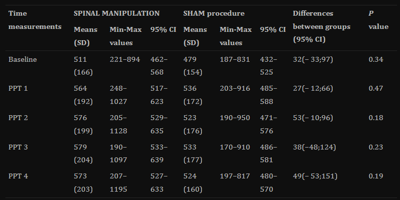

Description
Revolutionize massages with our all-in-one robotic arm. It adapts to different positions, controlled via an app. Affordable and perfect for physiotherapists. Swap components for various massages with ease.

Advantages of Vibrational massage
Increased Blood Circulation: Vibration can stimulate blood flow, promoting better circulation throughout the targeted areas.
Muscle Relaxation: Vibrations can help relax tense muscles and reduce muscle stiffness.
Improved Lymphatic Drainage: Vibration may enhance the movement of lymphatic fluid, contributing to the body's natural detoxification process.
Parameters: Frequency:(20-120)hz , Percussions: 1750-2400 per minute
Advantages of Rolling massage
Spinal Alignment: Rolling motions along the spine can contribute to better spinal alignment and posture.
Muscle Stretching: Rolling movements can gently stretch and elongate muscles, promoting flexibility.
Stress Relief: The rhythmic rolling can induce a calming effect, reducing stress and tension.
Advantages of Compression massage

Muscle Compression: Compression can target specific muscle groups, providing a deep and concentrated massage.
Joint Mobility: Compression can help improve joint mobility and flexibility.
Reduced Edema: It may assist in reducing edema or swelling in certain areas of the body.
Parameters: Pressure: 220 KPa – 900KPa , Surface of the contact : Flat surface and Cushioned.